InnovAzioni 2026 · Confindustria Abruzzo Medio Adriatico · Pescara
Venerdì 23 ottobre sono salito sul palco dell'Aurum di Pescara per la giornata conclusiva di InnovAzioni 2026, il Festival nazionale dell'Innovazione promosso da Confindustria Abruzzo Medio Adriatico. Nel panel «Agenti IA per le imprese. Tra ecosistemi globali e capitali» ho rappresentato ufficialmente due realtà, il Distretto Aerospaziale Abruzzo (DAAB), dove sono responsabile dell'Open Innovation nel Comitato Tecnico-Scientifico, e Thales Alenia Space, dove lavoro come tecnologo. Qui ho raccolto le foto, quello che ho detto sul palco con il reel dei miei interventi, i quattordici articoli che ne hanno parlato e il reel della rassegna stampa.
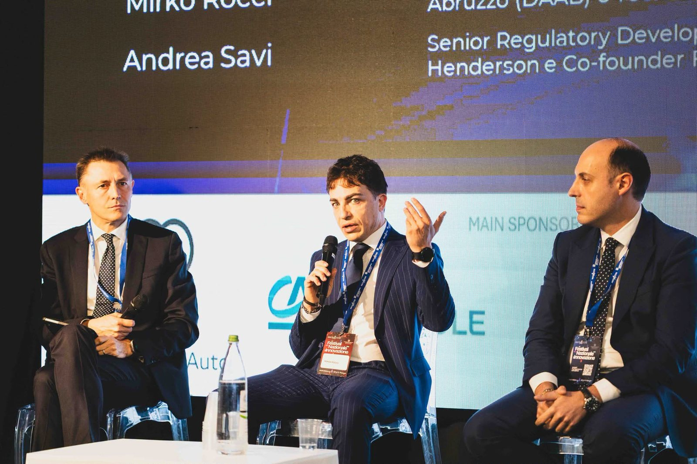
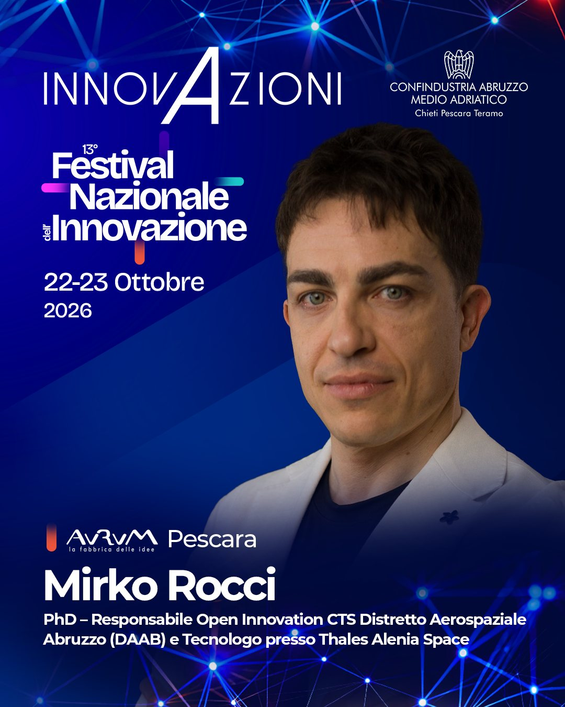
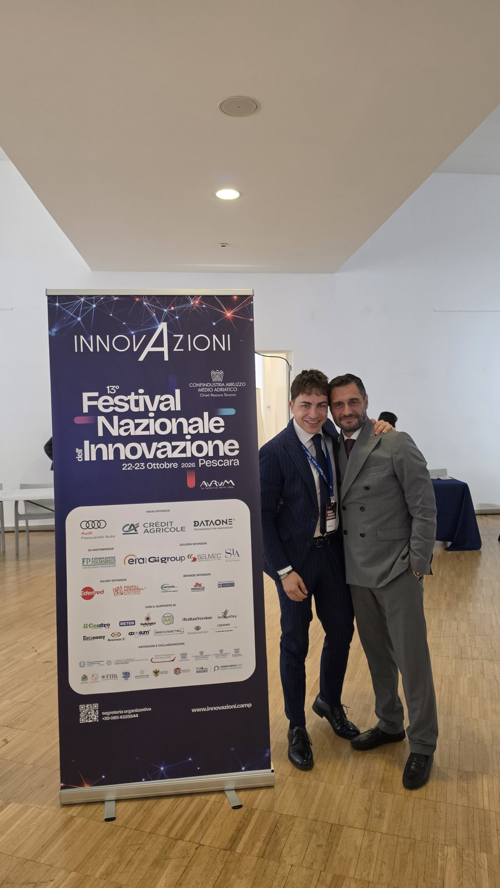
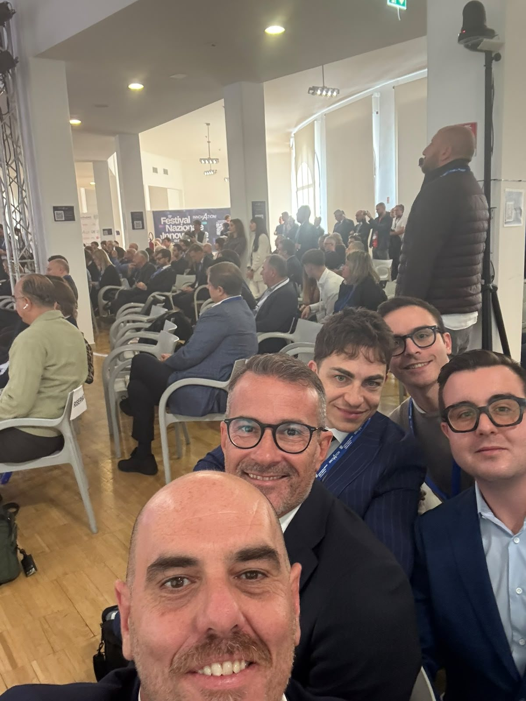
InnovAzioni è arrivato alla tredicesima edizione e ogni anno mette nella stessa sala imprese, startup, università e istituzioni. Il tema di quest'anno era «Impresa intelligente: AI Agents e nuovi modelli decisionali», con il patrocinio del Ministero delle Imprese e del Made in Italy e la partnership della Fondazione Pescarabruzzo. La prima giornata ha portato all'Aurum oltre 200 partecipanti tra imprenditori, manager, esperti e studenti, insieme al presidente nazionale di Confindustria Emanuele Orsini.
Dopo i saluti, la giornata conclusiva è partita dalle relazioni internazionali, con Albert Aoun sui rapporti economici tra Italia e Libano e Leonard Cox sulla sovranità tecnologica europea. Subito dopo è toccato al nostro panel, presentato e moderato dalla giornalista Evelina Frisa, con Andrea Riva, responsabile Open Innovation di Crédit Agricole Italia, e Andrea Savi, Senior Regulatory Development Manager di Janus Henderson e co-fondatore di Flyber Aerospace Composites.
Rappresentare il Distretto Aerospaziale Abruzzo e Thales Alenia Space a un tavolo sull'intelligenza artificiale per le imprese vale più del singolo intervento. Accanto a una grande banca e a un gestore internazionale di investimenti c'era la voce dello spazio abruzzese, con le aziende, i centri di ricerca e le competenze che il distretto mette in rete. L'aerospazio è da sempre un banco di prova per le tecnologie più esigenti, e l'IA è uno dei terreni su cui questa esperienza può parlare a tutto il sistema delle imprese.
Per chi si occupa di open innovation, incontri come questo sono il cuore del lavoro. Le idee migliori nascono quando mondi diversi si siedono allo stesso tavolo, e un festival che riunisce industria, finanza, ricerca e istituzioni è il posto giusto per far nascere collaborazioni nuove.
Ringrazio Confindustria Abruzzo Medio Adriatico e il presidente Lorenzo Dattoli per l'invito, Evelina Frisa per la conduzione, Andrea Riva e Andrea Savi per il confronto, il Distretto Aerospaziale Abruzzo e Thales Alenia Space per la fiducia.
Nel panel ho raccontato il Distretto Aerospaziale Abruzzo, un'associazione no profit nata per volontà di Thales Alenia Space, Telespazio e Leonardo con il supporto della Regione Abruzzo. Oggi conta una sessantina di soci tra grandi imprese, piccole e medie imprese, startup e istituzioni, e lavora su tre pilastri, la formazione, la ricerca e il fare impresa, con le istituzioni coinvolte come stakeholder.
Ho anticipato la prima call del distretto per le startup, che apriremo a breve con due percorsi, uno per le soluzioni e uno per le idee, e con l'intelligenza artificiale come tema centrale. Ho parlato poi del filone sul digital twin del Comitato Tecnico-Scientifico. I dati dei satelliti per l'osservazione della Terra, incrociati con quelli raccolti a terra da sensori e stazioni meteorologiche, permettono di costruire un gemello digitale del pianeta per fare previsioni, studiare eventi emergenziali ed epidemie e seguire il consumo delle risorse.
Sui dati ho spiegato perché nel nostro settore vanno trattati con estrema cautela, in ambienti controllati. L'Europa non dispone di grandi modelli come quelli cinesi e americani, e ogni interazione con quei modelli significa inviare i propri dati. Poter contare sulla capacità di calcolo dei supercomputer di Leonardo, che anche l'ecosistema del distretto può utilizzare, è importante, ma resta un divario con il resto del mondo che va colmato. Ho chiuso ricordando che il distretto conta su numerose aziende che già lavorano con l'intelligenza artificiale, e che come distretto siamo pronti per questa sfida.
Il reel con i passaggi principali dei miei due interventi, con i sottotitoli. La registrazione completa è nella diretta in fondo alla pagina.
Il programma del festival (PDF)La mia scheda da Innovation Speaker
I quattordici articoli, dal programma del 14 ottobre al resoconto del 24, in meno di un minuto.
Tutti gli articoli in cui compaio come rappresentante del Distretto Aerospaziale Abruzzo e di Thales Alenia Space, prima e dopo il panel. Li trovate anche nella rassegna stampa del sito, raccolti sotto l'etichetta InnovAzioni 2026.
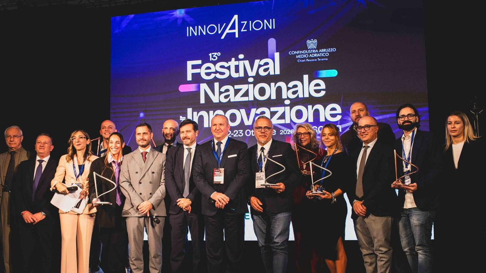
Abruzzo PopolareInnovAzioni chiude con le premiazioni24 ottobre 2026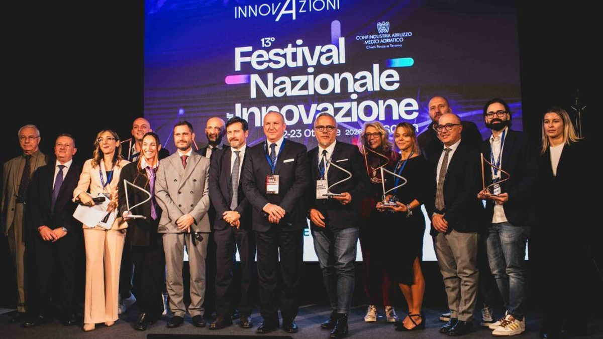
Notizie d'AbruzzoInnovAzioni 2026: dall'IA alla robotica, fino alla longevità e alla sostenibilità23 ottobre 2026 Rete8Festival InnovAzioni: all'Aurum premiate le idee del futuro23 ottobre 2026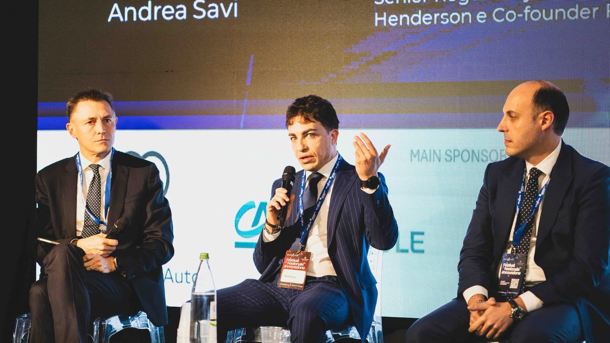
Confindustria Abruzzo Medio AdriaticoInnovAzioni 2026 premia le eccellenze dell'innovazione, con la foto del panel23 ottobre 2026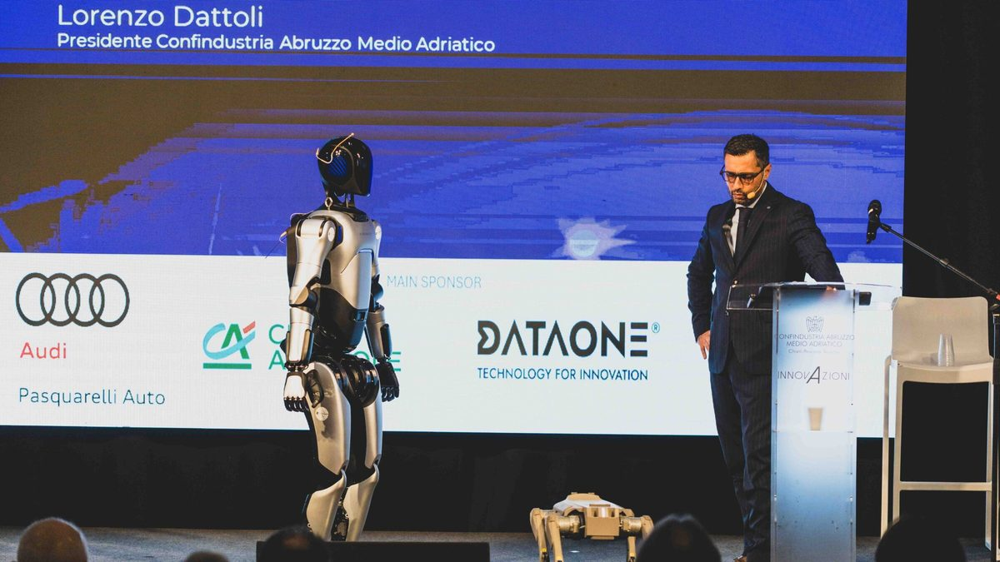
Abruzzo PopolareConfindustria, a Innovazioni si parla di Intelligenza Artificiale22 ottobre 2026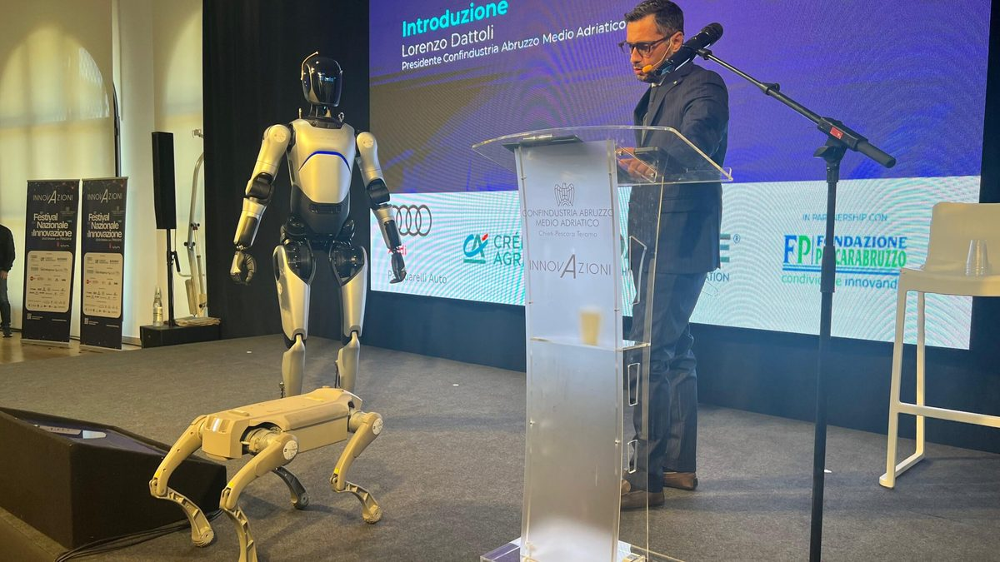
Rete8Pescara: al via il festival nazionale dell'innovazione22 ottobre 2026 Notizie d'AbruzzoInnovAzioni 2026, a Pescara il Festival dell'Innovazione di Confindustria Abruzzo Medio Adriatico20 ottobre 2026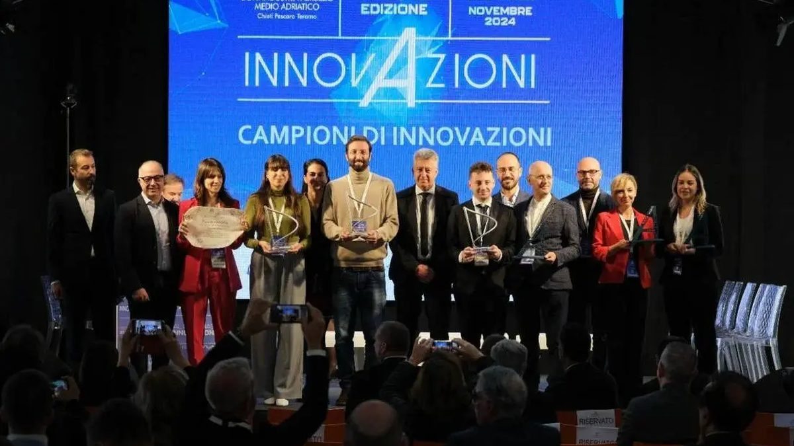
Abruzzo SpecialePescara, torna il Festival nazionale InnovAzioni: 13esima edizione dedicata agli Agenti AI19 ottobre 2026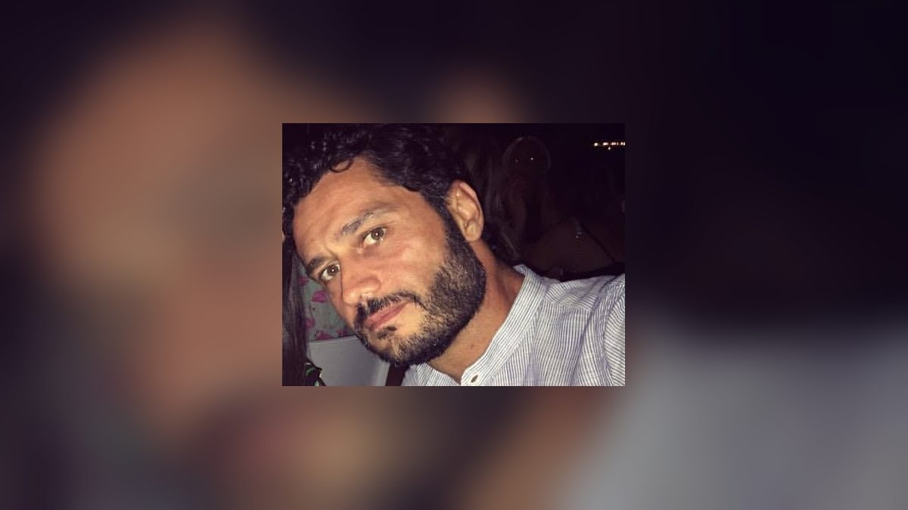
Abruzzo PopolareInnovAzioni 2026: a Pescara il Festival nazionale dell'Innovazione dedicato agli Agenti IA19 ottobre 2026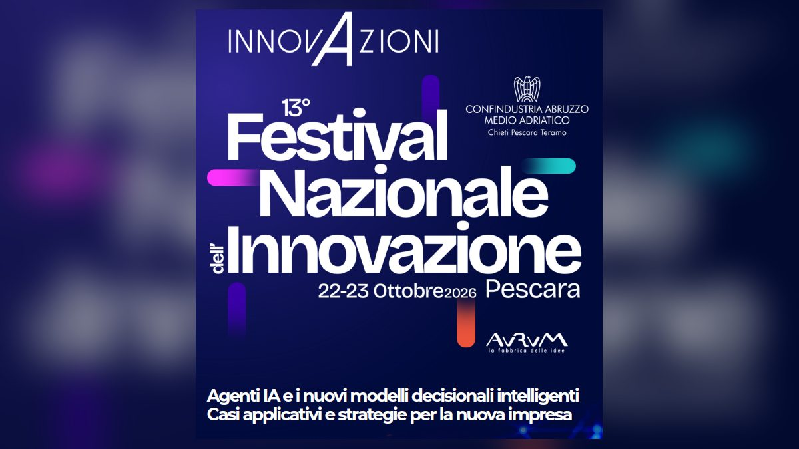
FIRAInnovAzioni 2026: a Pescara il Festival nazionale dell'Innovazione dedicato agli Agenti IA. FiRA partner dell'iniziativa19 ottobre 2026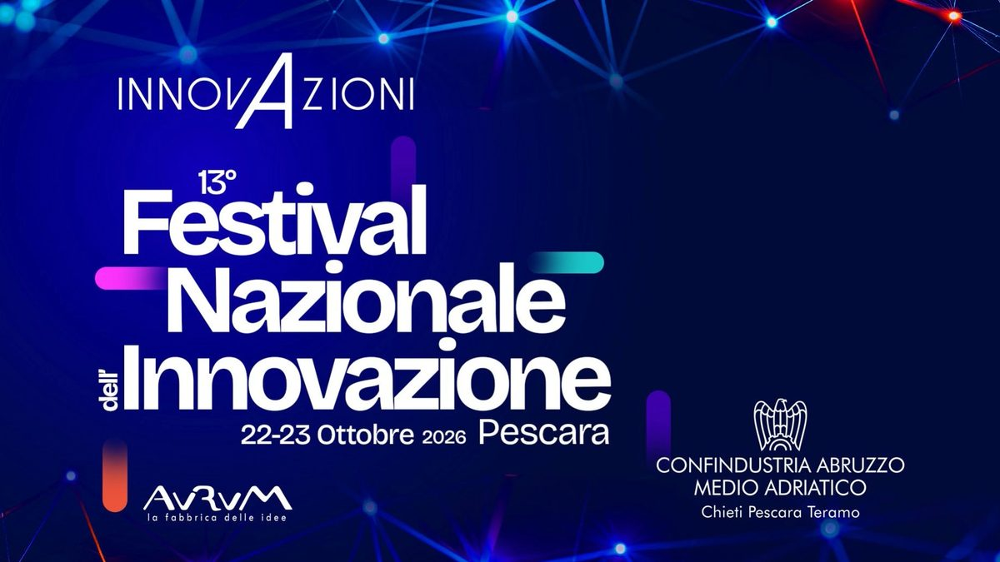
Italian Network«InnovAzioni e AI» al centro del Festival italiano dell'innovazione promosso da Confindustria Abruzzo Medio Adriatico a Pescara15 ottobre 2026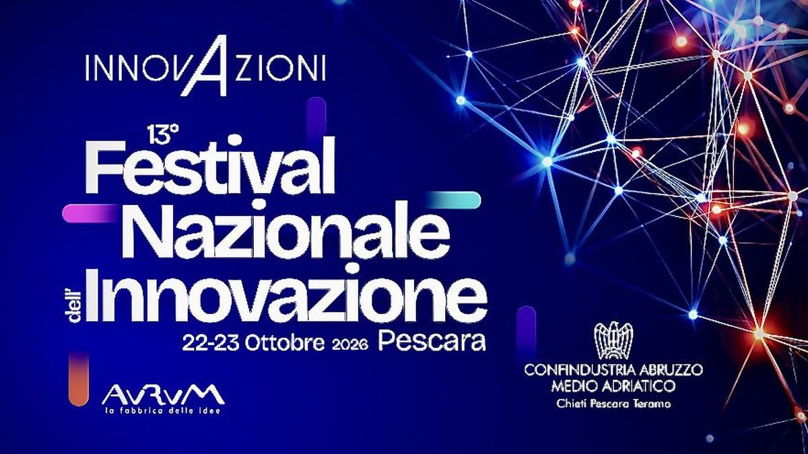
Miami Scientific Italian CommunityInnovAzioni, Italian Innovation Festival15 ottobre 2026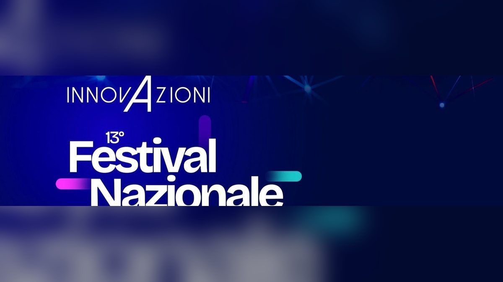
Confindustria Abruzzo Medio AdriaticoInnovAzioni 2026, online il programma del Festival nazionale dell'Innovazione14 ottobre 2026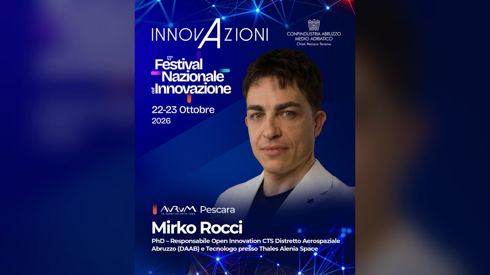
InnovAzioni · Innovation SpeakerMirko Rocci, Innovation Speaker 20267 ottobre 2026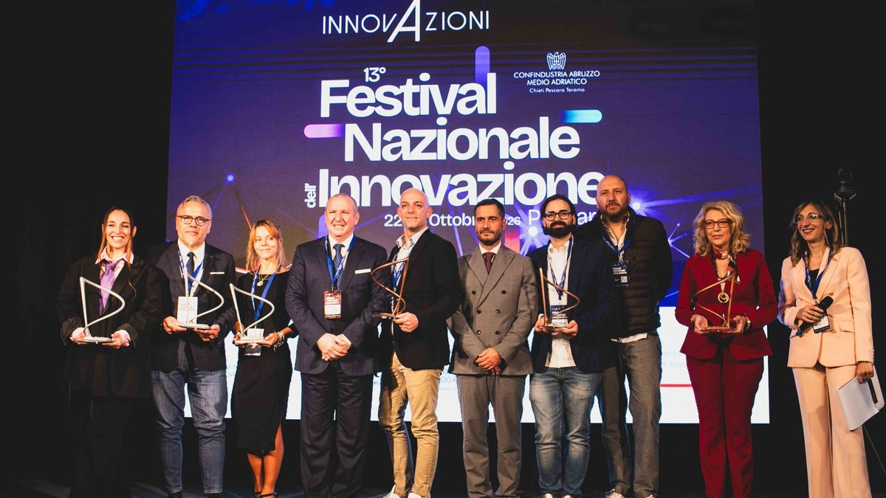
InnovAzioni · comunicato stampaInnovAzioni 2026 premia le eccellenze dell'innovazione: dall'IA alla robotica, fino alla longevità e alla sostenibilità23 ottobre 2026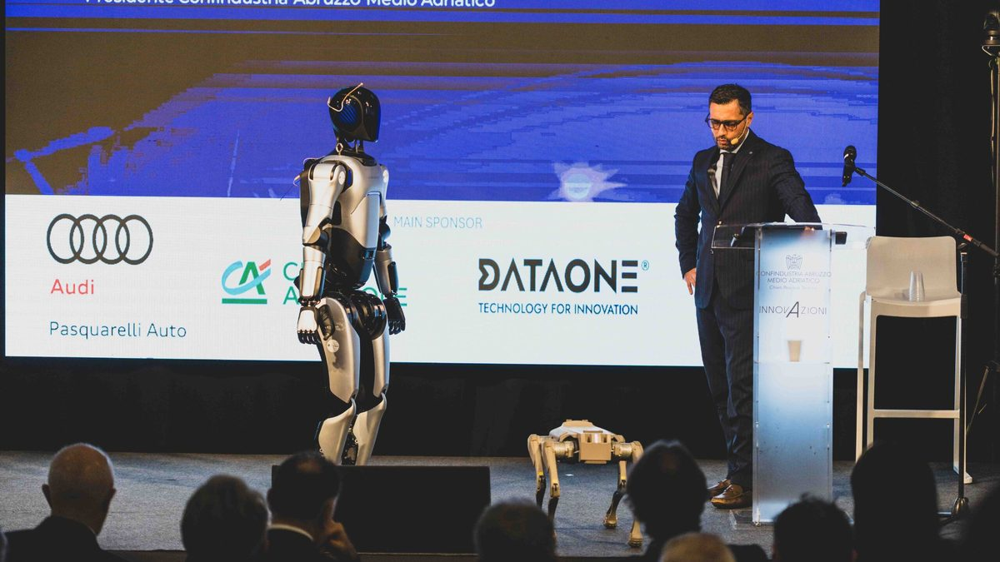
InnovAzioni · comunicato stampaInnovAzioni, arrivano i robot: il futuro dialoga con le imprese22 ottobre 2026 InnovAzioni · invito stampaInnovAzioni 2026: a Pescara il Festival nazionale dell'Innovazione dedicato agli Agenti IA19 ottobre 2026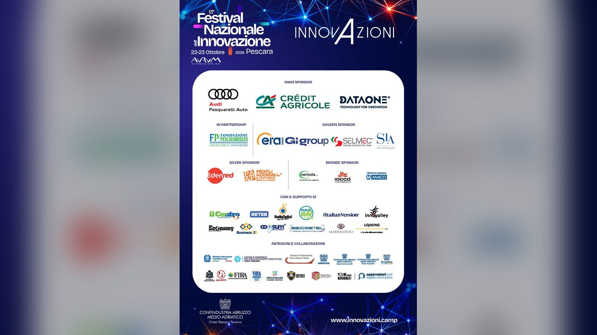
InnovAzioniInnovAzioni 2026, online il programma del Festival nazionale dell'Innovazione15 ottobre 2026 InnovAzioniInnovAzioni 2026: prenota il tuo posto e scopri gli InnovAtion Speakers attesi14 ottobre 2026La diretta integrale della giornata conclusiva, dal canale di Confindustria Abruzzo Medio Adriatico. Il video parte dall'inizio del panel, a 1:19:00. I miei interventi sono a 1:25:15 e a 1:39:05. C'è anche la diretta della prima giornata.